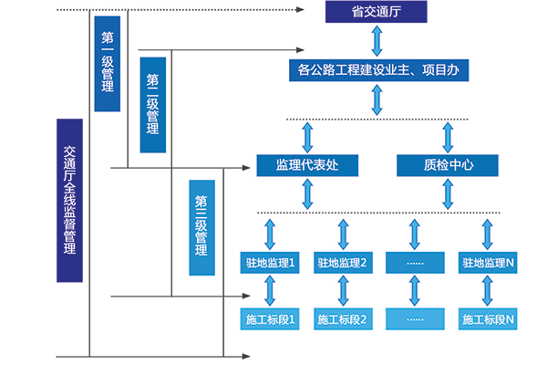
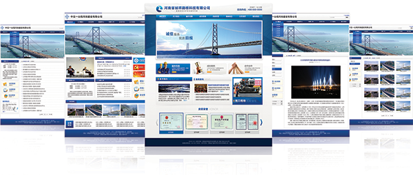

高速公路建设项目信息化管理系统
高速公路建设项目信息化管理可以为公路建设管理单位提供一套规范化、自动化、科学化的工程项目管理模式，利用完善的计算机网络来支持项目实施过程中涉及的本项目的业主单位、设计单位、监理单位、施工单位、以及各职能部门等各方内部业务及相关业务之间的交互，使之达到加速工程项目相关信息的流转速度、提高工作效率、强化工程项目管理的信息化水平、降低工程项目建设成本的目的。
系统完成后，可极大的支持工程项目建设管理工作，主要体现在以下几个方面：
l 系统实现高速公路建设管理层对各项目工程建设进行动态管理；建设项目各参建单位对各自的业务数据进行申请、审核、审批，同时按要求上报管理单位相关的工程资料，以备上级主管单位对各项目进行实时管理。
l 可及时了解工程状况，将原来依附于月报、季报、年报基础上的事后管理工程模式，提高为事前预测、事中控制的模式。
l 工程计量时，承包人只需做好《中间计量单》，系统即可自动生成《清单支付报表》、《计量证书》、《中期支付证书》等相关信息，并提供打印、导出功能，减轻了用户工作量，提高了效率。
l 系统可在准确、大量的工程管理数据基础上，提供分析、决策支持功能，可增强管理部门工作的科学性与准确性。
l 系统的成功实施可以实现综合信息管理、决策支持，全面提高管理水平、减少管理成本、规范各项业务，提高项目管理水平。
l 系统的使用可以提高人员素质，培养自觉执行管理制度的能力、减少人为失误给工程项目带来的损失，避免重复劳动，全面减少工程项目实施的成本。
l 通过使用系统，使工程项目的历史、经验数据得到有效地保存。数据的积累为工程项目管理水平的提高奠定了坚实的基础。
l 可有效的节约、减少各协作单位之间的业务联系时间和来往费用。
l 可以满足用户并发操作、实时操作的要求。
第一级管理：即交通厅管理级。作为交通厅要对项目建设单位进行直接管理，同时还要对各工程建设项目进行宏观管理。
第二级管理：即各建设业主、项目办管理级。作为各公路建设项目办要对上级单位项目建设单位进行负责，同时要对项目各参建单位（监理单位、施工单位等）进行统筹管理。
第三级管理：即各公路建设监理工程代表、质量检测中心管理级。负责对项目各施工单位的各种上报业务数据需要进行统计、汇总、查询并生成相关报表上报给主管单位。

项目门户网站是满足对外信息发布和协同工作的整体信息化入口。以内容管理系统（CMS）作为基础应用平台根据项目的实际需求进行分类管理，与大多数门户网站构造原理类似，以html标准网页文件作为最终文件，能够非常容易被搜索引擎索引，是项目对外宣传窗口，也是项目参加单位共同入口，能够与其他子系统链接。

项目首页主要展示最新的工程新闻、工程动态、公告、新闻、友情链接、其他信息系统入口等，形式根据项目定制产生，以动画、文字、图片等多种形式展示内容，给人专业视觉冲击。
工程概况是对于整个工程项目的描述，工程概况图、工程投资、工程参建单位、工程建设进展、质量情况、进度情况、合同签订情况进行展现。
安全生产是项目建设中的重要内容，因此此分类主要针对安全生产情况，进行内容展现。
对于项目工作进行公告，包括会议、检查、招标、采购等信息公告。
技术交流对于技术资料管理，以及对于专题技术技术问题进行交流的内容可进行查询、下载。
管理机构主要以图形形式展示管理建设项目的单位。
办事指南是以文字和图形的形式分类展示项目中的管理流程。
对于高层用户需要了解工程的进展 情况，可通过实时工程情况的模块进入系统指定的工程重点部位的监控视频和统计分析视图。
对于系统中部分内容，比如需要回复或者讨论的信息，必须使用系统注册的用户才能使用，因此系统提供注册和登录模块，对于子系统oa、工程项目管理中的用可以直接使用子系统的账号进行登录。
项目办公OA管理系统，实现项目内部无纸化办公。办公OA管理系统的使用对象是项目管理层内部的各个部门，使各部门集中在一个封闭的网络环境中进行信息交流，系统采用最新技术，可同时兼容电脑，平板电脑和智能手机随时随地进行掌上办公。更好的提高办公效率，减少办公费用，体现协同办公的优势；
对于系统中部分内容，比如需要回复或者讨论的信息，必须使用系统注册的用户才能使用，因此系统提供注册和登录模块，对于子系统oa、工程项目管理中的用可以直接使用子系统的账号进行登录
公共信息是办公辅助模块，包括大事记、项目新闻简报、项目规章制度、公告板等信息。
公文管理是办公系统的一个重要组成部分，主要有收文管理、发文管理两个子模块组成。用户通过该模块可以完成网上公文的起草、校核、批复、签发等业务流程处理，同时针对每一发文可以查看该文签发的流程。
用户可以给自己或下级安排下达计划，此处建立与每日待办事项、会议安排的连接，通过填写日程安排，可以有计划的安排每日工作事项，也便于协调会议和活动的时间安排。还可在自己的日历安排表上设置各种提示信息，这些提示信息可以是用户每周计划、每年纪念日，或每天下班前的总结，并有闹钟设置，可以在特定的时间提醒用户。
工程信息：是为更快速的了解工程进度及工程的相关事宜而设计，主要包括工程简报、项目进展及劳动竞赛等信息。通过此模块指挥部各职能部门员工可以了解到工程的进展情况，同时领导部门也可以及时协调各职能部门工作。信息筛选：系统管理员对相关信息进行发布确认、实时发布的处理中心。
项目建设期管理主要包括合同管理、计划进度管理、质量管理、资金管理、现场管理、安全管理、计量支付管理、工程变更管理、资料文档管理、项目竣工管理等
项目建设过程管理子系统可以实现在统一的网络平台和应用平台上处理项目建设阶段的招投标、征地拆迁、合同、投资、进度、质量、竣工、文档等工程项目管理业务，实现信息交流的日常办公及审批，实现各级领导及有关部门、项目办、设计单位、监理单位、施工单位等项目参与的各方的信息共享、动态收集和实时发布，实时自动生成各种报表，以达到对工程建设项目全面、全过程动态管理的目标。
合同管理是依据合同文件规定的程序，运用各种有效的方法和手段，对承包人的技术活动进行监督和管理，以期使工程质量、进度和造价符合合同要求。
将所有合同以电子版和扫描件方式上传到系统，再按合同类别进行登记和归档，设置合同权限，实时自动生成各种合同报表，提供各类查询统计。
阶段计划、月计划、日进度由承包人在管理系统中申报，监理网上审批。阶段计划、月计划、日进度中相互关联数据由系统自动生成。年、月、旬、周进度统计表和工程监管单位、上级单位需要的计划进度统计报表由系统根据各标段批复计划和日进度汇总生成。
各合同段以国家标准和规范为依据，结合工程实际，划分本合同段的单位工程、分部工程、分项工程,在分项工程下继续划分施工段落或部位(需要时)以及施工工序,最后确定每道工序需填报的质量表格，建立各标段的工程质量管理体系。
加强工程项目资金管理，控制资金流向，做好资金使用计划，自动生成资金计划和实际使用情况报表，为资金筹措和领导决策提供依据。
针对施工单位的人员，机械设备，施工材料进行登记和管理方便汇总查询。
采用视频监控手段对施工现场的工程进度、安全、质量等实行可视化管理，使各级管理者在办公室就可以直观、形象、实时掌握现场情况。
通过上传文本或扫描件方式将安全管理资料进行分类保存，以便管理层能通过网络实时查安全管理实施情况。系统需要建立的安全生产台帐为：全年安全工作布署及总结、安全会议纪录、安全管理监督检查纪录、安全事故隐患督察通知书、安全教育培训纪录、安全事故情况纪录、安全事故处理结果纪录、安全事故报表纪录、安全管理文件汇编、安全日志等。
工程计量时，承包人只需做好《中间计量单》，《清单支付报表》、《计量证书》、《中期支付证书》等由系统自动生成，并提供打印、导出功能，减轻了用户工作量，提高了效率。
工程变更管理是工程造价控制的一个重要的环节，变更因技术级别或变更金额的大小，分为不同的等级，并可按类别设置不同的审批流程和审批权限，进行分类管理。
工程建设中形成的批复文件、会议纪要、计量支付报表、计划进度报表、质量资料等定期按要求自动收集到竣工文件相应目录下，实现一键转换为竣工资料。对工程实施过程中产生的其它相关技术资料，可由用户自定义设置目录通过文本上传方式进行分类保存，以便能通过网络实时进行调用查询。
系统提供数据汇总功能，保证决算数据的准确；同时系统按照要求，以概算清单形式体现概算 、清单、决算等各阶段的数据对比关系；提供完善的竣工决算表和决算数据。
系统在处理时，各标段的基础数据均由该系统其它相关子系统（工程支付数据、计日工支付数据、废置工程支付数据等由计量支付子系统提供；标段标底及合同数据、工程变更数据由合同管理子系统提供）自动统计汇总，无须用户手工填写； 其它二、三部分费用及调价工程 、收尾工程只须录入一次就可进行决算汇总。
系统提供还未用户提供身份验证，权限管理，IP地址过滤，关键信息加密，报表电子签名，手机短信提醒、数据流程查询，待处理工作提醒等辅助功能。
2015 © 河南祯祥智能工程有限公司. ALL Rights Reserved.